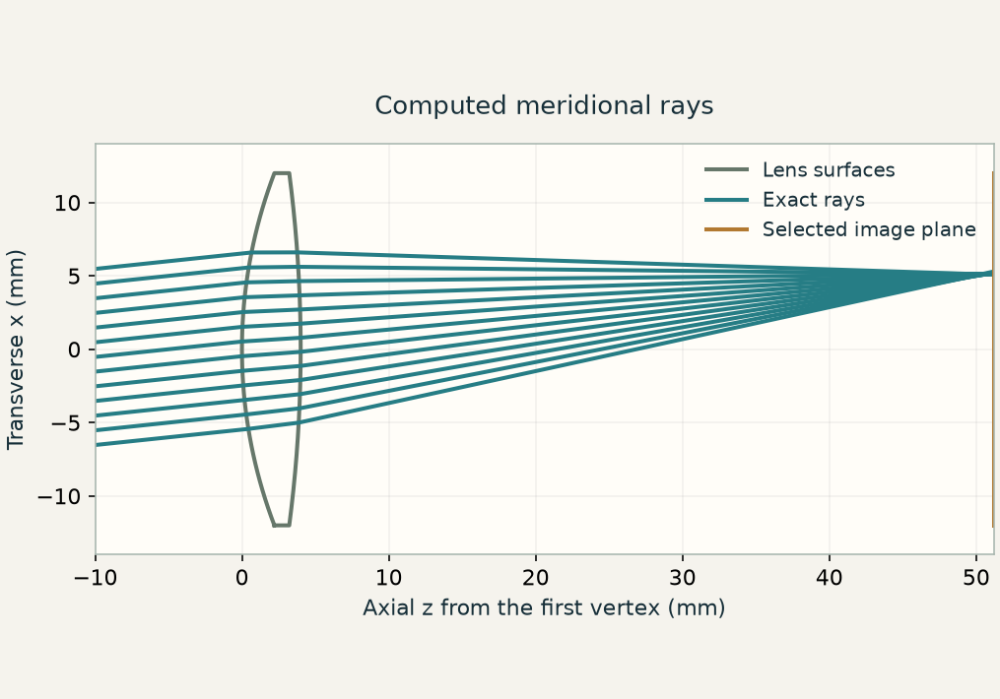

当前概念
可微光学
本章涉及
将光学预测连接到任务损失，检验导数，再更新光学或数字设计参数。

本章涉及的概念
在知识图谱中查看本章 ↓E12 / 为什么学这一课？
两片透镜可以具有相同焦距，却形成不同的有限孔径光斑。改善中心可能使边缘变差。一个有用的设计过程必须先明确所需视场、瞳面和像面，再改变曲面形状。
你将学会： 把成像要求转化为可复现的目标，在物理约束下优化，并解释分数改善后仍然存在的取舍。
学习 E12 之前 / 预备知识
针对不熟悉的概念阅读指定章节，然后回到本课。
阅读厚透镜与主平面示意图。E11 会具体展开曲面求交与折射算法。
通过点列图区分像的位置与像的散布。本课会明确给出采用的 RMS 指标和视场权重。
Python 实验准备： 在参数网格上评价函数，记录最佳有效试探，并用更密采样复核。
NumPy · 初学者基础指南 ↗
本课将展开： 定义并优化受约束的透镜设计目标。核心实验不要求微积分优化方法或伴随求解器。
浏览全部预备知识与学习资源 →E12 / 五分钟影片
先观看短片，再用下方实验亲手检验其中的概念。
5:08 · E12 · 用可测量的目标设计透镜打开影片 ↗
视频 / 跟随推理
让优化器可靠地改进透镜之前，必须先固定什么？
先沿着大纲理解视频论证，再展开跳得太快的环节。时间点为近似值，点击可回看对应片段。
相同近轴焦距并不能保证有限孔径光线形成相同的几何光斑。
搜索透镜弯曲参数，并对中心光束重新对焦。得到的最小中心光斑，只对应这个明确的目标。
明确任务、追迹、测量、在约束下更新，再验证。最终结构参数只有与评价条件一起给出才有意义。
瞳面权重 wⱼ 描述单个视场内的采样；视场权重 Wₖ 指定哪些物方方向对设计重要。减去各视场质心，会把像的位置从这个模糊指标中移除，因此畸变不受约束。方差的平均值，也不同于最差视场目标。
所有视场共用一个像面。若让每个视场使用各自的最佳焦点，就会移除真实单平面相机仍然面对的一项限制。搜索可以选择这个公共像面，但不能给每个视场分配不同像面。
固定 n、d 与近轴光焦度 Φ 后，两个表面的曲率仍有不同分配方式。对每个 q 求解光焦度约束，就得到一个结构参数族。即使有效焦距相同，它们的有限角度像差和主平面位置仍会不同。
固定瞳面，并拒绝或惩罚失败追迹。在完整机械通光孔径内检查曲面间隔。用更密且移位的瞳面采样，以及优化视场之间的物方方向，重新评价所选结构。这些检查用于区分光学改善与采样偶然性。
较低的几何 RMS 并不等同于调制传递测量或公差分析。E03 提供衍射联系，E10 则在另一种前向模型中解释目标敏感度。光线优化器与麦克斯韦伴随共享设计流程，但不是同一个算法。
E11 用光线追迹预测选定透镜会把每条光线送到哪里。逆向设计则把这个计算变成决策：在允许的结构参数中，哪一组能改善指定的成像指标？在写清目标与设计约束之前，搜索算法并不知道什么叫更好。
本课使用一个规模明确的小模型：空气中的单透镜，折射率 n = 1.5、中心厚度 d = 4 mm、近轴有效焦距 f = 50 mm。我们联动调整两个表面曲率，并为整个视场选择同一个像面。入射光阑保持在 z = −5 mm。玻璃类型、镜片数量和孔径不参与优化。
弯曲参数 q 改变前后两个表面对折射能力的分担。两个曲率一起求解，使厚透镜光焦度保持不变。后焦距仍可移动，因为固定有效焦距并不等于固定主平面位置。
对每个物方视场角，我们将加权瞳面光束追迹到同一个像面。质心给出像的位置，相对质心的平均平方距离给出几何光斑方差；其平方根就是 RMS 光斑半径。多视场目标对 0°、3° 和 6° 的光斑方差作等权平均。
02 / 检验预测
所有光场和曲线均由所述模型计算得到。检验预测时，请固定其余参数。
调整参数之前，先做预测
两片透镜具有相同近轴焦距，也接收相同的入口光束，它们一定形成相同的像吗？先预测：只让中心光斑最小，是否也会给出 6° 视场的最佳结果？
模型： 空气中单片球面透镜的单色顺序几何设计：n = 1.5、中心厚度 4 mm、近轴有效焦距 50 mm。固定入口孔径，仅优化弯曲参数和公共像面位置。RMS 相对各视场质心计算。优化不包含衍射、色差、畸变目标、偏振、菲涅耳功率权重或制造公差。
追迹器读取曲面半径、轴向位置、折射率和通光孔径。设计参数化必须把每次试探转换成有效结构。本例将光焦度约束直接写入参数化，并为每次试探检查正的边缘厚度与完整光线追迹。
对固定结构，移动像面会改变所有光线的横向交点，因此重新对焦是本设计计算的一部分。每个被评价的视场必须使用同一像面；若各视场独立对焦，就会掩盖场曲，并相当于评价了另一种仪器。
轴上目标不会直接奖励边缘视场的改善。加入多个视场，会改变搜索所回答的问题。平均光斑半径的平方，也不同于最小化最差视场；改变权重是设计决策，不只是绘图选项。
此 RMS 指标减去了各视场自己的质心，所以它衡量几何散布，却不会惩罚像的位置偏离理想像高。畸变、相对照度、色差和调制传递，需要额外的测量或目标。
每次运行中，入口孔径保持不变。未击中允许曲面或无法透射的光线会计入失败并受到惩罚，而不是在计算更小光斑前悄悄移除。透镜在机械孔径内还必须保持真实的曲面间隔。
浏览器在这个两参数族中进行有界数值搜索，并统一重新对焦。E10 则用相位瞳面的波动模型演示伴随导数。两者共享的是前向模型—目标函数—更新这一流程；更复杂的光学系统可能需要不同的导数与搜索方法。
用更多瞳面光线和中间视场角重新评价最终结构。报告公共像面、视场权重、光线数与失败比例。采样评价函数下降，说明该模型和目标下取得了改善；它并不证明全局最优、可制造相机或某种衍射 PSF。
04 / 检查理解
先做预测，再查看解释。
独立运行的 Python 实验会逐步构建模型、绘制结果，并用独立预测检验计算。实验使用 NumPy、SciPy 和 Matplotlib，在 CPU 上运行，无需克隆仓库、使用 GPU 或下载外部数据集。
可复现的设计同时包含结构参数与评价条件。固定孔径和光线失败检查，可以避免误导性的改善。
改变视场权重就改变了设计问题。应依据同一张完整视场表评价结果，而不是直接比较两个定义不同的标量损失。
独立采样用于检验所选方案是否利用了评价网格的局限。它能补充更完整的波动和公差模型，但不能替代后者。
对曲面半径、中心厚度和折射率施加固定随机种子的扰动，再在不变的标称像面上重新评价相同视场。这检验的是假定变化下的敏感性，并非制造良率。
Notebook 中已明确标出拓展部分。请先完成核心实验及其检验。
空气中单片球面透镜的单色顺序几何设计：n = 1.5、中心厚度 4 mm、近轴有效焦距 50 mm。固定入口孔径，仅优化弯曲参数和公共像面位置。RMS 相对各视场质心计算。优化不包含衍射、色差、畸变目标、偏振、菲涅耳功率权重或制造公差。
配套短片： 观看上方 E12 影片 (5:08).
E12 / 概念之间的联系
标出的概念是本章内容。选择任意概念，探索相关章节。
连线表示概念之间的关系，不代表必须遵循的章节顺序。
先选择核心概念，需要深入时再展开具体术语。
当前概念
本章涉及
将光学预测连接到任务损失，检验导数，再更新光学或数字设计参数。
当前概念
同时保留振幅与相位，描述探测器测量强度之前的光场行为。
当前概念
用空间频率分量描述光场。同一种表示方式串起传播、成像、重建与设计。
当前概念
推进各个分量，再将它们叠加，从而追踪光场在空间中的传播。
传播分量在传播过程中积累相位。
角谱将光场分解为平面波。
比较标量传播与电磁场模型。
离散传播需要考虑混叠与计算窗口的限制。
几何光线与波动传播保留不同层次的物理信息。
当前概念
从光场的相关性理解相机平均后保留的现象：干涉、条纹可见度和散斑。
当前概念
本章涉及
比较几何成像误差、点响应和频率传递，理解光学图像能够承载哪些细节。
当前概念
借助参考光，或对强度测量施加约束，恢复光场信息。
当前概念
把所需的相位分布变成光学元件，再考察相位包裹、量化和波长依赖。
当前概念
从重复结构出发，联系衍射方向、布洛赫传播，以及结构阻挡的频段。
当前概念
寻找与算子或结构相适应的光场模式。相关的本征值方法也用于描述布洛赫波与统计意义上的相干模。
单周期算子的本征值给出布洛赫因子。
都使用本征分解，但描述的物理对象不同。
本征场与时域演化提供互补的观察角度。
当前概念
理解连续光场变成数组后发生的变化：采样限制、计算窗口与导数近似。
网格间距与时间步长影响数值误差。
离散传播需要考虑混叠与计算窗口的限制。
区分采样限制与光学截止频率。
当前概念
在网格上推进相互耦合的电场与磁场，并检验时间步长和边界处理的精度。
当前概念
用一个标量目标与伴随计算，求出每个设计参数如何改变结果。
当前概念
本章涉及
跟踪位置与方向如何通过折射曲面，再用有限孔径几何光线检验近轴预测。
当前概念
本章涉及
选择结构参数、目标函数与物理约束，再跨视场并用独立采样评价所得透镜。